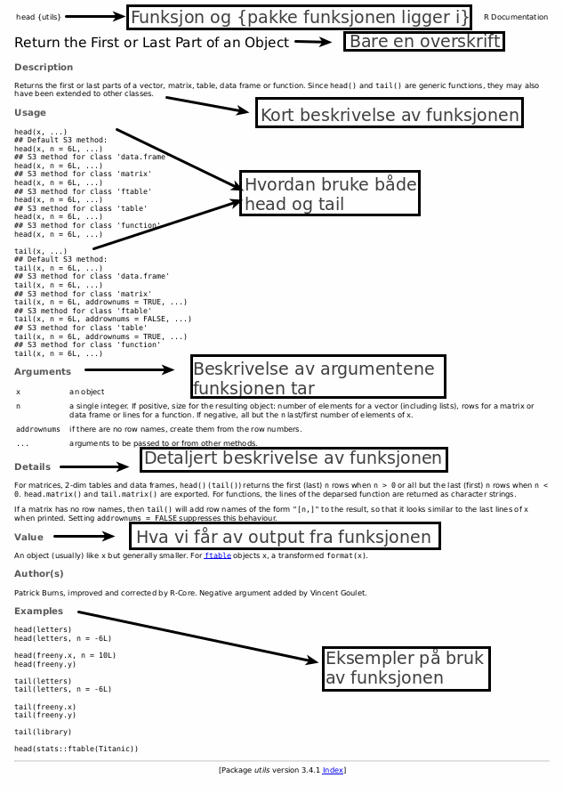
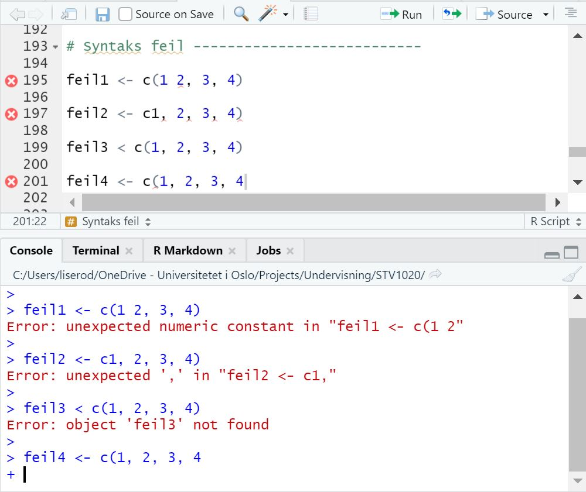
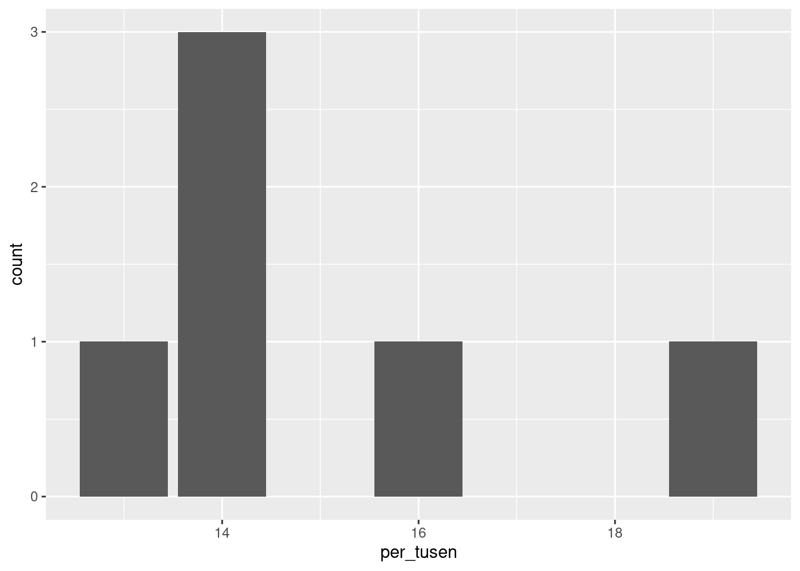

# Dette er en kodeblokk.Seminar 1 – Velkommen!
Gjennom 6 seminarganger skal vi nå gå igjennom alt fra hva R og Rstudio er og hvordan det fungerer, til å kjøre våre helt egne regresjonsanalyser. Vi gleder oss!
Før hvert seminar kommer vi til å legge ut lenke til fire ting på Canvas:
- R-script
- En fil som forklarer litt mer av scriptet
- Oppgavesett
- Datasett
I denne boken vil dere finne noe tekst, noen figurer og tabeller, og noe kode. Innholdet reflekterer det vi har planlagt å gå gjennom på seminarene. Eksempelkoden i boka blir markert i blokker som har en egen mørk bakgrunn som her:
Mens output av koden, der det er relevant, vil ha en lysegrå bakgrunn, som her:
[1] "Dette er output"Alt som er skrevet i de mørke boksene kan dere kopiere inn i et R-script og kjøre for å se hva som skjer. Når det er en # (hash) foran en tekstlinje så betyr det at vi skriver en kommentar i scriptet. Når vi setter en # foran teksten så skjønner R at dette ikke er vanlig kode, men en kommentar. Resultatene av faktisk kode vil komme i et eget felt med grå bakgrunn under. Se for eksempel her:
# Dette er en kommentar. Nå skal vi gjøre et lite forsøk med noe
# enkel matte! For å kjøre koden setter dere musepekeren ved siden
# av, og trykker ctrl+enter (cmd+return på Mac).
100/2 + 4[1] 54Mapper, filbaner og prosjekter
Før vi begynner med R så skal vi se litt nærmere på mapper, filbaner og prosjekter. Når vi skal jobbe med R er det viktig at du er klar over hva mapper og filbaner er. Vi kommer til å lagre script, figurer og datasett i mapper som vi vil finne igjen senere. I tillegg trenger vi filbanene for å fortelle R hvor datasettet vi ønsker å laste inn befinner seg.
For å åpne mapper bruker vi Filutforsker (Windows) og Finder (Mac). Ofte ligger mapper inne i andre mapper, under en harddisk (for eksempel C:). Mappene vi må klikke oss gjennom for å komme fra harddisken til en bestemt mappe eller fil, f.eks. mappen STV1020, utgjør filbanen til mappen STV1020. I Filutforsker finner du filbanen øverst. Du kan merke den ved å klikke på den og så høyreklikke for å kopiere den. På Mac kan du i følge Apple sine support sider klikke på Finder-symbolet i Dock for å åpne et Finder-vindu og velge Vis > Vis banelinje for å finne filbanen. Plasseringen og nestede mapper som inneholder filen din eller mapper skal så vises mot bunnen av Finder-vinduet.
De av dere som har lest Healy sitt pensumbidrag husker kanskje at han anbefaler å jobbe i prosjekter. Prosjekter er en fin måte å organisere notatene fra R-seminarene på. I første seminar kommer vi til å vise hvordan dere kan opprette et prosjekt for R-seminarene. Når en oppretter et prosjekt så kan en velge om en vil knytte det opp til en eksisterende mappe eller opprette en ny mappe. Vi kommer også til å vise hvordan dere kan opprette en ny mappe. Vi anbefaler at dere lagrer alle datasett og script i denne mappen. Lag dere gjerne et eget system med undermapper for hver seminargang eller en mappe til datasett, en til script osv.
Når du oppretter et prosjekt så vil det legge seg en fil med suffiks .Rproj i mappen din. Det er denne du skal åpne hver gang du vil jobbe videre med seminarfilene. Da husker R hvilke mapper innholdet ditt ligger i. Om dere vil så kan dere lese mer om prosjekter i Appendix i Healy eller i R for Data Science. Et alternativ til å jobbe i prosjekt er å bruke setwd("filbane") hver gang du åpner et script.
R og RStudio
Før seminaret har dere lastet ned R og RStudio. R er selve programeringsspråket vi bruker og som gjør at vi kan skrive kode. Når vi laster ned R så laster vi egentlig ned et program som gjør at datamaskinen vår kan forstå det vi skriver, og gjøre det vi ønsker at den gjør. Selve R-scriptet, eller koden om en vil, kunne vi egentlig skrevet i word, eller notisblokk. RStudio, programmet vi kommer til å bruke, er det som kalles et “Integrated development environment” (IDE), og brukes for å gjøre det lettere å skrive scriptet.
Rstudio har flere fordeler. Vi har for eksempel enkel tilgang til hjelpefiler, den markerer hva forskjellig kode er ved hjelp av farger, og presenterer resultatene på en (vanligvis) lettleselig måte. Derfor er det alltid Rstudio vi åpner når vi skal jobbe med R. Hvordan Rstudio ser ut er beskrevet i Healy og i denne introduksjonen til R og Rstudio. Vi kommer også til å gå gjennom de ulike panelene i seminaret.
Hjelpefiler
Ofte når vi bruker R er vi usikre på hvordan forskjellige funksjoner fungerer. Da kan det være nyttig å lese hjelpefilene som forteller hva en funksjon gjør, og hvordan en skal bruke den. For å gjøre dette skriver du et spørsmålstegn før navnet på funksjonen.
# La oss prøve dette med 'mean()' funksjonen, som logisk nok finner
# gjennomsnitt:
?meanDersom du får et svar som under her så tyder det på at du ikke har installert pakken funksjonen ligger i. Da kan du legge til et spørsmålstegn til og kjøre kode ??vif.
?vifNo documentation for 'vif' in specified packages and libraries:
you could try '??vif'I hjelpefilen får vi en del informasjon om funksjonen. Funksjoner hjelper oss å hente ut informasjon fra data. Et eksempel på data kan være en tallrekke fra 1 til 10. Informasjonen vi ønsker å hente ut kan for eksempel være gjennomsnittet eller standardavviket. Vi kan bruke funksjoner til å få R til å hente ut denne informasjonen for oss. Alle funksjoner har til felles at de tar noe data, f.eks. tall, og skaper et resultat. I tilegg har noen argumenter som gjør at vi kan endre på hvordan funksjonen lager resultatet, hva vi får opp i consol og liknende.
Leser vi hjelpefilen til funksjonen mean() så ser vi at den øverst gir en beskrivelse, hvor det står at den returnerer gjennomsnittet. Under der kommer argumentene den godtar; et argument (x) som definerer hvilke data vi vil hente ut informasjonen fra, et argument for å trimme dataene, altså fjerne noe, og na.rm argumentet som forteller R hvordan de skal håndtere missingverdier i beregningen. Under Value får vi en beskrivelse av hva funksjonen “produserer”, før til slutt et eksempel av hvordan den brukes i bunn.
Hjelpefilene er en flott måte å finne ut hva en funksjon gjør, og hvordan vi kan bruke den. Samtidig kan den ofte være litt kronglete å lese. Da hjelper det ofte å se på eksemplene som alltid er i bunn av teksten. Ellers beskriver også Healy hvordan man kan lese hjelpefilene i Appendix. Skulle det fortsatt være vanskelig er det viktig å huske at det finnes et stort miljø rundt R, og ofte er det mange som har opplevd samme problem som deg! Litt googling, og et søk på https://stackoverflow.com/ vil fort gi gode svar! Det er også mulig å spørre i facebookgruppen R for statsvitenskap ved UiO.
Under er et eksempel på hjelpefil for funksjonen head():

Syntax-feil
Når vi skriver kode vil vi fort gjøre en del feil. Det er helt vanlig og noe som er helt uungåelig! Dere vil nok fort merke at også seminarleder kan gjøre en hel del feil når vi skal vise dere eksempler i seminaret. En type feil kan likevel være grei å merke seg med en gang – mest fordi alle gjør den når de skriver kode. “Syntax-feil” er skrivefeil vi gjør når vi skriver kode. F.eks. kan det være å skrive men() istedenfor mean(), glemme å lukke en parantes sånn at vi skriver mean( og liknende. Noe av det fine med RStudio er at den markere sånne feil for oss!

Bildet over viser eksempler på feilskrevet kode samt hvordan Rstudio markerer dette og hvilke feilmeldinger vi får når vi prøver å kjøre koden. Dere kan se at R har markert tre av fire linjenummer med en rød X. Dette er steder hvor RStudio mener vi har gjort feil. Hvis vi holder musepekeren over kryssene får vi opp forslag til hva som kan være feilen. "Unexpected token ')'" betyr at RStudio mener det er en parantes der som ikke skulle vært der. I tilegg er det røde streker under de delene av koden som RStudio mener er feil. Det som ofte gjør at ting stopper opp i R, er slike enkle skrivefeil/syntax-feil som dette. Derfor er det veldig nyttig at RStudio viser det på denne måten!
Objekter, funksjoner, og klasser
Vi har allerede sett på litt enkel kode, men framover skal vi gått litt dypere inn i hvordan kode faktisk fungerer. Koding er en måte å fortelle PC-en hva vi vil den skal gjøre gjennom tekst. Sånn sett er det nærmest det samme som når du klikker på noe, bare at koding er mer effektivt (etter hvert som en lærer seg det). Når vi skriver kode må vi vite hva vi skal skrive for at pc-en skal forstå det. All den tid det ikke finnes noen enorm ordbok som forteller alt vi kan skrive i R er dette noe vi må lære oss, og kanskje pugge, eller bare søke etter når vi trenger det. Den vanligste måten å lære nye koder på er å google etter spesifikke ting du ønsker å gjøre.
Objekter
Det første vi skal se på er objekter. Objekter er i alle “ting” i R som kan inneholde noe annet. Noen objekter laster vi inn ved hjelp av pakker, noen er bygd inn i R og andre kommer vi til å lage selv. Dere kan tenke på for eksempel datasett, funksjoner og modellresultater som mulige objekter. Vi lager nye objekter ved å bruke R sin assignment operator <-.
Vi skal i hovedsak forholde oss til to typer objekter; vektorer og funksjoner. Hva disse er nok lettere å vise ved eksempel. La oss lage et objekt med informasjon om et tall. For å gjøre dette må vi først velge et objektnavn, så bruke <- (dette heter en “assignment operator”), og så skrive hva objektet skal inneholde. Her lager vi en vektor som heter “To” og som inneholder tallet 2.
To <- 2
2 + To[1] 4Som dere ser kan vi nå skrive 2 + To, kjøre koden og få ut resultatet fire. Når vi nå skriver “To” vet R at vi egentlig mener tallet 2 som er lagret i objektet. For så enkle ting som dette så er det nok enklere å bare skrive 2, eller bruke en kalkulator for den saks skyld. Det fine med objekter er at de kan inneholde veldig mye informasjon!
I første omgang kan vi prøve å lagre flere tall i et objekt. Det er flere måter vi kan gjøre dette på, for eksempel så kan vi skrive 1:10 for å få alle heltallene mellom 1 og 10, eller skrive c(1, 22, 5, 2, 1) for å lage en tallrekke. I det siste skiller vi tallene med komma. Objektene kan du kalle akkurat hva du vil, men som vi skal se på senere er det noen retningslinjer som er lure å følge:
Navn bør bare inneholde små bokstaver, tall og _.
Ikke bruk et tall som første tegn.
Ikke bruk æ/ø/å.
Ikke bruk mellomrom.
Ikke bruk FALSE, TRUE, Inf, for, else, break, function eller andre funksjonsnavn
La oss nå lage noen flere objekter:
en_til_hundre <- 1:100
tall <- c(1, 4, 56, 8, 4, 2, 4)
tall[1] 1 4 56 8 4 2 4Funksjoner
Nå som vi har et script med flere elementer kan vi prøve å kjøre noen funksjoner på dem. En fuksjon er kort sagt noe man gir en eller annen input til, for så å få tilbake en output.1 La oss se om vi kan finne gjennomsnittet av disse vektorene:
mean(en_til_hundre)[1] 50.5mean(tall)[1] 11.28571Med funksjonen mean() får vi gjennomsnittet (output) for hele vektoren/objektet (input). Som oftest er det det vi ønsker, men om vi kun ønsket gjennomsnittet av noen utvalgte tall så er det også mulig ved hjelp av indeksering eller filtrering. Dette skal vi se mer på senere. Vi kommer til å bruke en rekke funksjoner gjennom seminarrekka, og det kan fort virke litt overveldende mye å huske. Men det er alltid lov å søke opp hvilke funksjoner som gjør hva i R – denne boka er forhåpentligvis et godt utgangspunkt for slike søk.
Indeksering
Om dere ser i environment så vil dere merke at etter navnet på vektoren tall så står det først “num” og deretter [1:7]. Den første teksten sier at dette er et numerisk objekt. Klasser skal vi straks gå inn på. Det neste viser lengden på vektoren vår. tall har sitt første tall i plassen 12, og siste i 7. Altså er det 7 elementer. Om vi ser på en_til_hundre ser vi at det står 1:100, og denne har altså 100 elementer.
For å få tak i et spesifikt element kan vi bruke disse klammeparanteser. La oss si at vi vil ha element nr. 5 i vektoren tall:
tall[5][1] 4Når vi kjører denne ser vi at vi får ut det femte tallet i tallrekka vi skreiv inn i stad. Dette kan vi også sjekke i environment for å se at stemmer.
På samme måte som vi definerte en rekke tall istad, kan vi også hente ut en rekke elementer.
tall[3:6][1] 56 8 4 2tall[c(3, 5, 3, 6)][1] 56 4 56 2Vi kan også finne gjennomsnittet av utvalgte tall:
mean(tall[c(3, 5, 3, 6)])[1] 29.5Eller bruke disse som et nytt objekt:
ny_vektor <- tall[c(3, 5, 3, 6)]Klasser
Så langt har vi kun jobbet med tallverdier. Ofte har vi variabler som ikke er tall, men f.eks. tekst eller ordinalverdier. I R vil vi også se at visse funksjoner krever at dataene er i visse klasser. Hovedklassene vi kommer til å bruke er; numeric, character, logical og factor. Numeric er tall (logisk nok). De fleste mattefunksjoner krever at dataene er numeric. For å sjekke om noe er numeric kan vi bruke funksjonen is.numeric().
is.numeric(en_til_hundre)[1] TRUE# Her ser vi at vi får opp 'TRUE' som betyr at en_til_hundre er et
# numerisk objektVi kan også bruke funksjonen class() til å hente ut informasjon om klassen:
class(en_til_hundre)[1] "integer"Dere vil noen ganger se at det skilles mellom “numeric” og “integer”. Forskjellen er at integer kun kan inneholde heltall, mens numeric kan ha desimaler. Dette er svært sjeldent interessant for vår del.
Når vi vil skrive tekst bruker vi klassen “character”. En tekststring må alltid ha hermetegn (““) rundt seg, men ellers definerer vi den som vanlig:
Tekst <- "Hei, jeg elsker R! <3"
# Denne klassen kan inneholde tekst, men vil f.eks. ikke kunne brukes
# til matte.
mean(Tekst)Warning in mean.default(Tekst): argument is not numeric or logical: returning
NA[1] NAHer ser dere at vi får en feilmelding, som sier at argumentet ikke er numerisk eller logisk. Funksjonen gir oss derfor resultatet NA, som betyr missing, altså at det ikke eksisterer et resultat.
Vi kan også kreve at et objekt skal ha en viss klasse. Det gjør vi med funksjonen as."klassenavn" (bytt ut “klassenavn” med for eksempel numeric eller character). Det kan føre til noen uforventede resultater. La oss gjøre om objektet tall til character:
tall_ch <- as.character(tall)
mean(tall_ch)Warning in mean.default(tall_ch): argument is not numeric or logical: returning
NA[1] NAGrunnen til at vi får en feilmelding her er fordi vi ikke kan ta gjenomsnittet av tekst. Om dere ser i environment står det også nå at tall er chr (charater) og det “” rundt alle tegnene.
Den siste klassen vi kommer til å bruke ofte (men det finnes flere) er “factor.” En faktor er en variabel som kan ha flere forhåndsdefinerte nivåer og brukes ofte når vi skal kjøre statistiske modeller. En lett måte å forstå faktorer på er å tenke på dem som ordinale variabler, hvor vi kan vite rekkefølgen på nivåene men ikke avstanden, som for eksempel utdanningsnivåene barneskole, ungdomskole, videregående skole.
For å lage en faktor bruker vi funksjonen factor(). La oss først lage en faktor med ulike utdanningsnivåer:
# Lager en faktorvariabel uten å sette nivåer
skolenivaer <- factor(c("Barneskole", "Ungdomskole", "Videregaende", "Videregaende",
"Universitet", "Ungdomskole", "Universitet"))
# Printer alle verdiene
skolenivaer[1] Barneskole Ungdomskole Videregaende Videregaende Universitet
[6] Ungdomskole Universitet
Levels: Barneskole Ungdomskole Universitet Videregaende# Printer alle nivåene
levels(skolenivaer)[1] "Barneskole" "Ungdomskole" "Universitet" "Videregaende"# Er det noe som skurrer her?I eksempelet her kan vi se at vi først definerer de forskjellige verdiene som er i variabelen. Vi har ikke spesifisert hvilken rekkefølge nivåene har. Når vi ikke gjør det så baserer R rekkefølgen på alfabetet. Derfor få vi rekkefølgen “Barneskole” “Ungdomskole” “Universitet” “Videregaende”. For å unngå dette så kan vi spesifisere faktornivåene:
# Endrer faktornivåene
skolenivaer <- factor(skolenivaer, levels = c("Barneskole", "Ungdomskole",
"Videregaende", "Universitet"))
skolenivaer[1] Barneskole Ungdomskole Videregaende Videregaende Universitet
[6] Ungdomskole Universitet
Levels: Barneskole Ungdomskole Videregaende Universitetlevels(skolenivaer)[1] "Barneskole" "Ungdomskole" "Videregaende" "Universitet" I toppen her nevnte vi at en vektor var et objekt som inneholdt elementer av samme klasse. Så langt har vi også holdt oss til det gjennom å kunne lage objekter med tekst eller tall. Hva skjer da om vi prøver å blande? Vi kan lage et objekt som inneholder både tekst og tall:
teksttall <- c(1, 4, 0, 4, "Bamse", "R", "R Seminarer er de BESTE seminarer",
42, "the answer")
class(teksttall)[1] "character"mean(teksttall[1:4])Warning in mean.default(teksttall[1:4]): argument is not numeric or logical:
returning NA[1] NASom vi kan se er her klassen blitt character, også for tallene! Det er fordi at når vi definerer en vektor som inneholder flere klasser, blir det slått sammen til den klassen som har minst informasjon. Dette kalles “implicit coercion”, og rekkefølgen går: logical -> integer -> numeric -> complex -> character.
Dataframes
Noen ganger har vi lyst til å slå sammen data som er av forskjellige typer. F.eks. kan det være at vi har data om alder, navn, fylke og vil ha dette som et objekt eller datasett. For å gjøre dette bruker vi data.frames. En dataframe består av flere kolonner, hvor hver kolonne er en vektor. Vektorene kan ha ulik klasse, og det kan for eksempel være en character vektor og en numerisk vektor. Vi kan tenke på disse kolonnene som variabler.
Vi kan tenke på hver rad i en dataframe som en observasjon. En observasjon kan for eksempel være en person, et land i et gitt år eller en by. Når vi skal kjøre analyser i senere seminarer så vil vi som regel laste inn datasett/dataframes som andre har laget, men vi kan også lage dem selv. I dette eksempelet skal vi se på navnestatistikk i Oslo hentet fra SSB.no. Først lager vi vektorer som vi gir passende navn og lagrer i environment:
navn <- c("Mohammed", "Jakob", "Olav", "Martin", "Maja", "Sofia", "Iben",
"Therese")
antall <- c(94, 76, 68, NA, 65, 64, 60, NA)
per_tusen <- c(19, 16, 14, NA, 14, 14, 13, NA)
kjonn <- c("Gutt", "Gutt", "Gutt", "Gutt", "Jente", "Jente", "Jente", "Jente")
by <- c("Oslo")En viktig regel for dataframes er at alle vektorene må ha lik lengde. I eksempelet med navnestatistikk i Oslo så fantes det ikke data for navnene Martin og Therese (det finnes sikkert, men ikke i tabellen vi så i). Om vi mangler data så må vi finne en måte å “fylle” disse tomme cellene på. Når vi setter verdien til NA så forteller vi R at vi mangler data om akkurat denne observasjonen på denne variabelen. Dette er nødvendig for at R skal klare å matche informasjonen i de ulike vektorene korrekt. For å sjekke lengden på vektoren så kan vi se i environment eller bruke funksjonen length().
length(navn)[1] 8length(by)[1] 1Her ser vi at alle vektorer har lengde 8 med unntak av by som bare har en. Du kan også kombinere vektorer med enkeltverdier som med “Oslo” i eksempelet over. Når du gjør det vil alle observasjonene få verdien “Oslo” på variabelen “by”. Dette kan vi se nærmere på ved å lage datasettet. Vi lager datasettet ved hjelp av funksjonen data.frame():
navnestat <- data.frame(navn, antall, per_tusen, kjonn, by)I environment vil dere nå se at det dukker opp en ny rad under “Data” som heter navnestat. Når det står 8 obs (observasjoner) av 5 variabler betyr dette at vi har et datasett/dataframe med 8 rader og 5 kolonner. Klikker dere på objektet så vil dere se dette. Vi kan utforske datasettet nærmere ved å bruke View() (obs! stor V):
View(navnestat)Første observasjonen her er rad 1. Det er navnet Mohammed. Det viktigste med en dataframe er at vi nå kan kombinere ulik informasjon om samme observasjon på en gang. Det er flere måter vi kan bruke dette på. La oss først se på hvordan vi kan gjøre enkle analyser av en kolonne.
Til nå så har vi bare skrevet navnet på vektoren for å hente ut informasjon. Nå som vi har det i en dataframe, må vi først velge denne, og så kolonnen. Det er to måter vi kan gjøre dette på:
# Med klammeparanteser kan vi velge rad og kolonne. Rad kommer først,
# og så kolonnen: `datasett[rader, kolonner]`
navnestat[2, 1][1] "Jakob"# Skriver vi en tom får vi alle kollonene/radene
navnestat[, 2][1] 94 76 68 NA 65 64 60 NAnavnestat[2, ] navn antall per_tusen kjonn by
2 Jakob 76 16 Gutt OsloDet blir det fort vanskelig å huske tallet til plasseringen til en variabel. En mer vanlig måte å hente ut kolonner på er med $:
# Her skriver vi først navnet på dataframen, og så variabelen:
navnestat$antall[1] 94 76 68 NA 65 64 60 NA# La oss prøve å få ut gjennomsnittlet til antall
mean(navnestat$antall)[1] NAHm. Her ser dere at vi fikk NA til svar istedet for det gjennomsnittet vi ønsket. NA betyr som sagt bare missing, altså at vi ikke har informasjon om noe. Som dere husker så mangler vi informasjon om navnene Martin og Therese. Når minst en av verdiene er NA vil flere funksjoner returnere NA fordi vi strengt tatt ikke kan vite gjennomsnittet om vi ikke vet alle verdiene. For å få ut et resultat må vi derfor fortelle R at vi ønsker å fjerne NA-verdiene, og heller få gjenomsnittet av de verdiene som er tilstede. Det gjør vi ved å legge til argumentet na.rm = TRUE i funksjonen:
mean(navnestat$antall, na.rm = TRUE)[1] 71.16667median(navnestat$antall, na.rm = TRUE)[1] 66.5En lettere måte å få ut alle disse på er ved å bruke summary() funksjonen. Da trenger vi heller ikke bruke na.rm, fordi den heller sier hvor mange NA det er i vektoren. summary() kan også brukes for å hente ut informasjon om et helt datasett.
summary(navnestat$antall) Min. 1st Qu. Median Mean 3rd Qu. Max. NA's
60.00 64.25 66.50 71.17 74.00 94.00 2 summary(navnestat) navn antall per_tusen kjonn
Length:8 Min. :60.00 Min. :13.0 Length:8
Class :character 1st Qu.:64.25 1st Qu.:14.0 Class :character
Mode :character Median :66.50 Median :14.0 Mode :character
Mean :71.17 Mean :15.0
3rd Qu.:74.00 3rd Qu.:15.5
Max. :94.00 Max. :19.0
NA's :2 NA's :2
by
Length:8
Class :character
Mode :character
Ulike typer vektorer i R
Det finnes flere ulike objekter i R. Til nå har vi blitt introdusert for to av dem: datasett og vektorer. Hva slags objekt det er har noe å si for hva du kan gjøre med det. I tillegg finnes det ulike typer, eller klasser som vi kaller det, av vektorer. I tabellen under finner dere en grov inndeling av ulike typer vektorer i R:
| Atomic vector | List |
|---|---|
| numeric | blanding |
| integer | |
| character | |
| factor | |
| logical |
En hyppig årsak til at en funksjon ikke fungerer, er at en vektor/variabel ikke er i det formatet vi forventet. Tabellen gir en oversikt over variabeltypene vi skal jobbe med. Atomic vector har kun verdier av en type, mens lister kan ha flere typer verdier, samt bestå av flere variabler.
Hvilket format tror du navn, antall og by har?
Det kan vi sjekke med funksjonen class().
class(navnestat$navn)[1] "character"class(navnestat$antall)[1] "numeric"class(navnestat$by)[1] "character"Som dere ser er antall numeric, mens navn og by er character. Her er det hva objektet er lagret som som teller, ikke hvordan det ser ut i datasettet. Selv om noe ser ut som tall i datasettet så er det ikke sikkert det er registrert som tall av R. Heldigvis kan dette ofte løses ved hjelp av en funksjoner som as.numeric(), as.character() og as.factor().
# Her lager vi en ny variabel antall2 der vi ber R lagre alder som
# character
navnestat$antall2 <- as.character(navnestat$antall)Om vi ser på datasettet etter at vi har laget den nye variabelen så ser vi at alder og alder2 ser helt like ut. Begge fremstår som tall vi kan gjøre regneoperasjoner på, men bare en av dem er det. Prøv gjerne selv å kjøre funksjonen mean() som regner ut gjennomsnittet på alder2.
Logiske tester
R kan evaluere logiske utsdagn og bedømme om de er ´TRUE´ eller ´FALSE´.
1 == 2 # tester om 1 er lik 2[1] FALSE2 == 2 # tester om 2 er lik 2[1] TRUE"Statsvitenskap" == "statsvitenskap" # Logiske tester kan også brukes på tekst[1] FALSE"statsvitenskap" == "statsvitenskap" # R er imidlertid sensitivt til store og små bokstaver[1] TRUE1 <= 2 # Tester om 1 er mindre enn eller lik 2[1] TRUE1 >= 2 # Tester om 1 er større enn eller lik 2[1] FALSE1 != 2 # Tester om 1 er ulik 2[1] TRUE1 == 2 | 1 == 1 # Tester om en av de to påstandene 1 er lik 2 eller 1 er lik 1 er sanne[1] TRUE1 == 2 & 1 == 1 # Tester om begge de to påstandene 1 er lik 2 og 1 er lik 1 er sanne[1] FALSEOversikt over logiske operatorer:
| Operator | Betydning |
|---|---|
== |
er lik |
< |
mindre enn |
> |
større enn |
<= |
mindre eller lik |
>= |
større eller lik |
!= |
ikke lik |
!x |
ikke x |
| |
eller |
& |
og |
Vi kommer til å bruke disse operatorene mye, spesielt når vi gjør endringer i datasett som å lage nye variabler. Det er derfor viktig at dere forstår hvordan disse fungerer. Den beste måten å få denne foreståelse på er å øve.
Pakker
Det siste vi skal gjøre i dag er å lage en veldig enkel figur – vi skal visualisere. For å gjøre dette må vi først laste ned en pakke som heter tidyverse. Pakker er tilegg til R som gjør at du kan anvende flere funksjoner som ofte gjør ting enklere eller lar deg gjøre nye typer analyser. R i den formen den lastes ned kalles “base R”. Om noe er vanskelig å få til i base R, finnes det høyst sannsynlig en pakke som gjør det lettere!
Tidyverse, som vi vil bruke mye, er et sett med pakker som gjør databehandling mye, mye enklere. For å bruke denne må vi først installere pakken. Om dere har gjort dette på forhånd trenger dere ikke gjøre dette på nytt. Å installere gjør vi kun en gang, og så evt. på nytt om det kommer en oppdatering. Vi installerer pakker ved hjelp av funksjonen install.packages("pakkenavn"):
install.packages("tidyverse")Vi trenger bare installere pakken en gang, men for å kunne bruke pakken må vi også laste den inn. Du må laste pakken inn hver gang du starter R på nytt. Vi laster inn pakken ved hjelp av library():
library(tidyverse)── Attaching packages ─────────────────────────────────────── tidyverse 1.3.2 ──
✔ ggplot2 3.4.1 ✔ purrr 1.0.1
✔ tibble 3.2.0 ✔ dplyr 1.1.0
✔ tidyr 1.3.0 ✔ stringr 1.5.0
✔ readr 2.1.4 ✔ forcats 1.0.0
── Conflicts ────────────────────────────────────────── tidyverse_conflicts() ──
✖ dplyr::filter() masks stats::filter()
✖ dplyr::lag() masks stats::lag()Merk at pakkenavnet ikke står i hermetegn når vi bruker library(). Hermetegn rundt pakkenavnet er bare nødvendig når vi bruker install.packages().
Av erfaring, vet vi at det kan være litt forvirring rundt pakker i R, så her er en sammenligning mellom konseptene rundt pakker i R og apper på mobiltelefon:
| R | Mobiltelefon |
|---|---|
| R | Android / iOS |
| CRAN | play / app store |
install.packages() |
Installere pakke fra play/app store |
library() |
Åpne appen etter den er installert |
Visualisering
tidyverse skal vi bruke masse tid på nesten gang, men akkurat nå skal vi se på den delen som heter ggplot, som er en pakke for å lage grafikk i R på. La oss lage et enkelt barplot:
# I første argument spesifiserer vi datasettet og hvilken variabel vi
# vil plotte Vi legger til en + på slutten av linjen for å fortelle R
# at vi vil legge til flere lag Etter + skrive vi hva slags plot vi
# vil ha.
ggplot(data = navnestat, aes(x = per_tusen)) + geom_bar(bins = 30)
Dette var bare en kort introduksjon. Som vi skal se på senere så finnes det utallige måter å fikse på plot på.
Link til script
Du kan laste ned scriptet for dette kapittelet her.